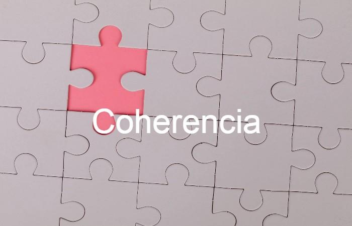

C O H E R E N C I A
Las oraciones coherentes son todos aquellos actos de habla que están bien formados
y cuyos elementos constitutivos guardan una relación lógica y consecuente por lo que
forman un todo. Este tipo de oraciones producen un mensaje claro y conciso que puede
ser considerado como la unidad mínima de un texto. Esto quiere decir que estas
oraciones se interrelacionan entre sí para formar párrafos que, a su vez, formarán
capítulos.
Ejemplos:
* El perro de mi hermano es muy bravo, por eso me mordió ayer en la pierna.
* Muchas bebidas alcohólicas son resultado de la fermentación. La cerveza sufre este proceso durante 10 días.
